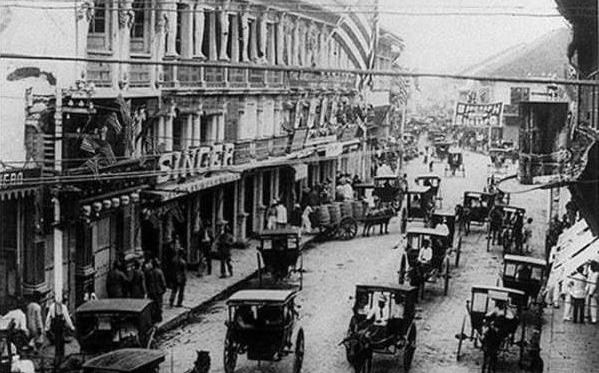

Kabanata 10 : Ang Bayan ng San Diego

Ang bayan na may malaking sakahan na matatagpuan sa baybayin ng isang lawa ay ang bayan ng San Diego.
Ang San Diego lang din naman ang pangkaraniwang bayan sa Pilipinas. Meron ding isang alamat ang bayan kung paano ito nagsimula at bahagi rin ng alamat ang kuwento tungkol sa mga ninuno ni Crisostomo.
At kung babalangkasin matagal ng naninirahan ang angkan ng mga Ibarra sa San diego. Bagaman, maituturing na pinakamayaman, hindi naman si Don Rafael Ibarra maituturing na makapangyarihan sa lugar na iyon, lalo pa dahil marami rin na makapangyarihan ang naiinggit sa kanya.
Tanging ang kura at alperes lamang ang maituturing na makapangyarihan at ang iba ay kanila na lamang mga tau-tauhan.
Repleksiyon
"Kung aalagaan at iingatan natin ang isang lugar, mas lalo itong uunlad."